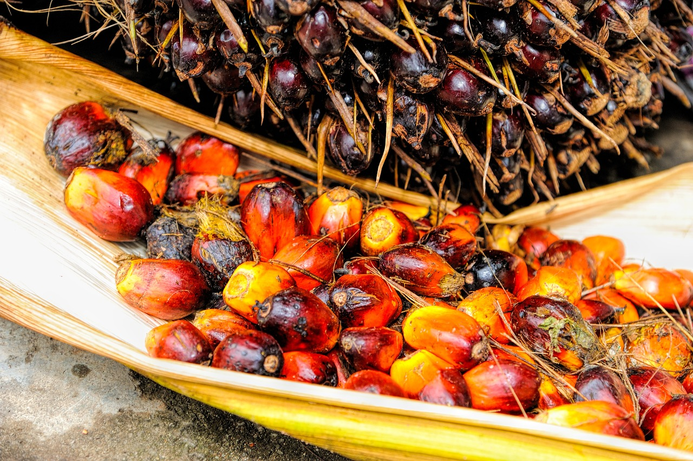

About This Website

Palm Oil Fruit by Pixabay.
This website is created by Rebecca(Becca) W., a college student at Bellevue College. Rebecca is passionate about the environment, and bringing awareness to habitat degregation and threats to biodiversity on our planet. She hopes that this site encourages others to be more aware.